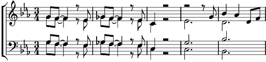

1. Chanter, c'est lancer des balles,
Des ballons qu'on tape
Pour que quelqu'un les attrape
Et que ça bibape loulap'
Des ballons d'hélium
Pour faire monter les hommes
Au-d'ssus
D'la pluie dans le solarium.
2. Chanter, c'est lancer des balles,
Casser des verrières
Et les filles, les seins à l'air,
Regardent tomber les bouts d'verres,
Pour qu'elles trouvent not'gage
De musique et de langage
Joli, à défaut du visage.
3. Chanter, c'est lancer des balles
Derrière une vitre
Pour pas qu'une petite nous quitte
Ou pour que la vie passe plus vite.
Seul contre un mur,
Sur une scène contre nature,
Ou en se cachant la figure.
Râper, morose, pour changer les choses
Et même, en désespoir de cause,
Des blagues au téléphone
Pour faire rire les personnes
Et la mère de Jim Morrison.